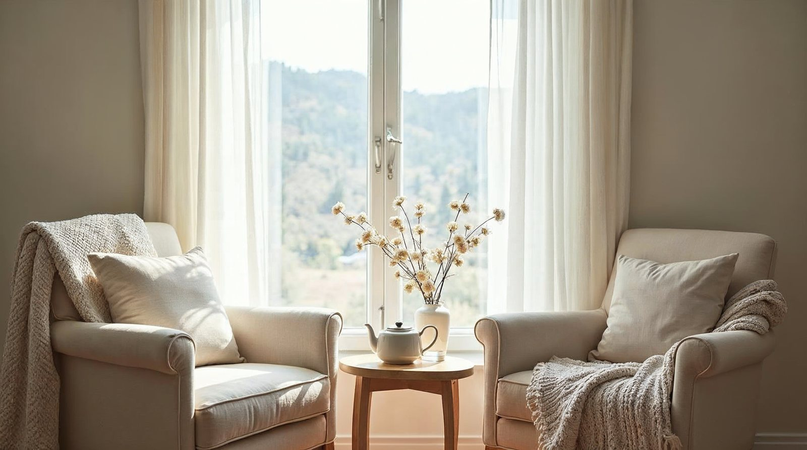
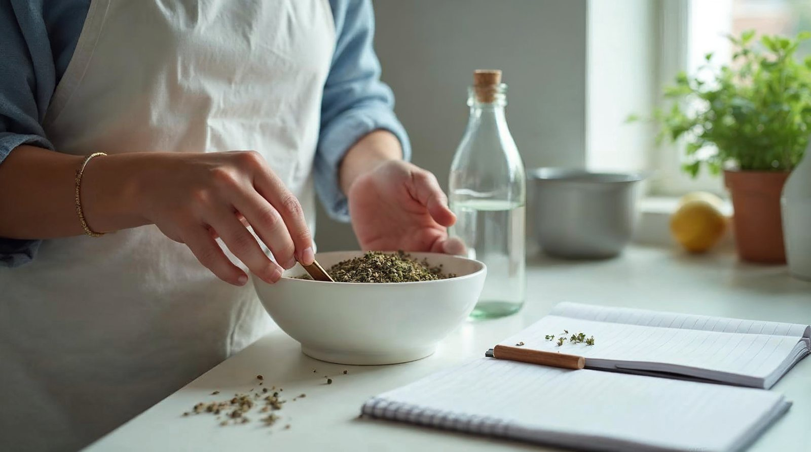
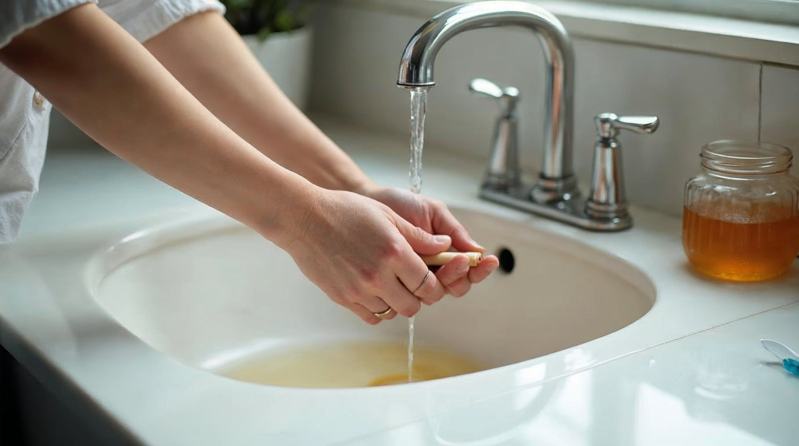
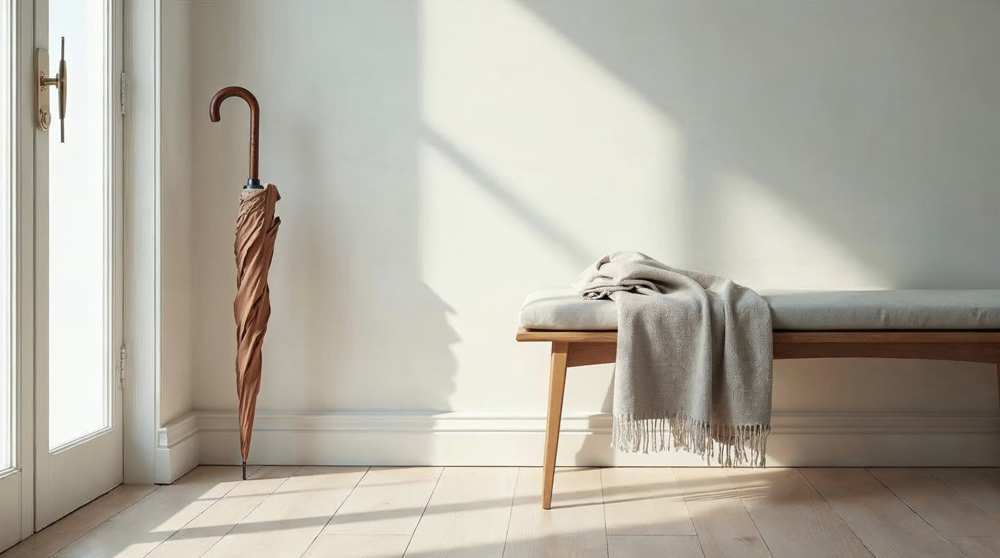
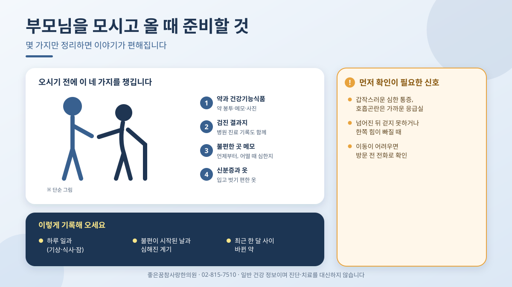

이종호 한의사 감수좋은꿈참사랑한의원 대표원장 (한의사 면허번호 19769)발행 2026-11-23 · 수정 2026-11-26
이 글의 차례
부모님을 모시고 오실 때 가장 먼저 챙기실 것은 세 가지입니다. 드시는 약 전부(약 봉투나 사진), 최근 건강검진 결과지, 그리고 어디가 언제부터 불편하신지 적은 짧은 메모입니다. 진료실에서는 부모님이 먼저 말씀하시고, 보호자는 평소 모습을 보태 주시면 됩니다.
토요일 아침, 부모님 댁 식탁에 약 봉투를 쏟아 놓고 하나씩 사진을 찍다 보면 한숨이 나옵니다. 내과 약, 정형외과 약, 언제 사다 드렸는지 모를 영양제까지 나옵니다. 어머니는 또 뭘 병원까지 가냐며 손사래를 치시고요.
그 마음을 압니다. 부모님을 모시고 병원에 다니는 일은 주말 하루를 통째로 쓰는 일입니다. 진료실에서는 시간이 금방 지나가 정작 묻고 싶던 것을 빠뜨리고 나오기도 쉽지요. 몇 가지만 미리 정리해 두시면 부모님도 보호자도 훨씬 편하게 이야기하실 수 있습니다.
요즘은 아침에 출근하면 아흔이 넘은 어르신 몇 분이 먼저 와 앉아 계시는 날도 있습니다. 지금의 부모님 세대는 일흔, 여든을 어떻게 사는지 보고 배운 적이 없는 시간을 살고 계십니다.
그래도 아프면 병원에 가고, 사진을 찍어 보고, 나아지려고 애쓰시지요. 저는 그 애쓰시는 마음을 돕는 것이 제 일이라고 생각합니다. 곁에서 모시고 오는 자녀분의 수고도 그 마음의 한 부분입니다.
왜 미리 정리해 오시면 좋을까요
어르신들은 여러 병원에서 약을 받아 드시는 경우가 많습니다. 진료과마다 따로 받은 약에 영양제까지 더해지면 무엇을 얼마나 드시는지 가족도 헷갈리기 쉽지요. 약 목록이 있어야 겹치는 약과 조심할 점을 함께 볼 수 있습니다.
약이 여러 가지면 졸림이나 어지럼이 겹치기도 합니다. 복지관에서 낙상 이야기를 할 때도 넘어지는 이유 가운데 하나로 드시는 약의 영향을 꼽았습니다. 그래서 저는 드시는 약을 전부 가져와 달라고 말씀드리곤 합니다.
증상이 오래되면 언제 시작됐는지 기억이 흐려집니다. 낯선 진료실에 앉으면 긴장해서 평소보다 말씀을 줄이시는 분도 많습니다. 짧은 메모 한 장이 그 빈자리를 채워 줍니다.
검진 결과지가 있으면 같은 검사를 되풀이하지 않고도 지금 몸을 이해하는 데 참고할 수 있습니다. 골밀도 검사를 받으신 적이 있다면 그 결과도 챙겨 주세요. 추나처럼 손으로 하는 치료를 정할 때 꼭 살피는 부분입니다.

먼저 이렇게 여쭙니다
- 가장 불편한 곳은 어디이고 언제부터인가요?
- 어떤 동작이나 시간대에 더 불편하신가요?
- 드시는 약과 건강기능식품은 무엇인가요?
- 최근 넘어지거나 입원한 일이 있었나요?
- 식사와 잠, 대소변은 평소와 비교해 어떤가요?
예전보다 바깥 나들이가 얼마나 줄었는지도 여쭙습니다. 아프다며 산책과 장보기를 줄이시면 당장은 편해도 다리 힘과 균형이 함께 떨어지기 쉽기 때문입니다. 이 질문에는 곁에서 지켜본 자녀분이 더 잘 아실 때도 있습니다.
부모님이 다시 하고 싶어 하시는 일도 여쭙습니다. 장보기든, 복지관 나들이든, 가끔 다니시던 여행이든 좋습니다. 목표가 있으면 오늘 몇 걸음을 걸으실지 정하기가 한결 쉬워집니다.
부모님의 이런 변화를 눈여겨봐 주세요
넘어지는 이유도, 기운이 빠지는 이유도 한 가지가 아닙니다. 그래서 진료실에 오시기 전에 자녀분이 곁에서 봐 두신 변화가 큰 단서가 됩니다.
아침에 눈을 뜨자마자 "또 하루가 시작이네" 하는 생각이 드시고 무릎과 발바닥, 허리가 먼저 쑤신다고 하신다면 몸의 힘이 많이 줄었다는 이야기일 수 있습니다. 걷다가 주변이 흔들리는 것 같다고 하시는지도 들어 봐 주세요.
눈이 침침해져 문턱이나 계단을 잘못 디디시는지, 약이 바뀐 뒤로 낮에 졸려 하시거나 어지러워하시는지도 봐 주세요. 다리에 힘이 없으면 발이 끌립니다. 걸음 소리가 예전과 달라졌다면 그것도 적어 오시면 됩니다.
깜빡하는 일이 부쩍 늘었다면 그것도 적어 와 주세요. 기억이 흔들리는 이유는 잠, 기분, 드시는 약처럼 여러 가지라 함께 여쭙습니다. 일상에 지장이 있을 만큼이라면 신경과 등에서 인지기능 평가를 먼저 받아 보시도록 권해 드립니다.

오시기 전에 정리해 두면 좋은 것
- 복용 중인 약과 건강기능식품은 약 봉투나 이름을 적은 메모, 사진으로 준비해 오기
- 최근 건강검진 결과지나 병원 진료 기록이 있으면 함께 가져오기
- 불편한 곳이 언제부터, 어떨 때 심해지는지 부모님 말씀을 짧게 적어 오기
- 신분증과 편하게 입고 벗을 수 있는 옷 챙기기
몸이 약해지면 무엇이라도 더 드시면 좋아질까 싶은 마음이 드는 것을 압니다. 그래도 꼭 필요한 것을 필요한 만큼 드시는 편이 좋습니다. 줄이거나 끊는 것은 혼자 정하지 마시고, 처방한 의사나 약사에게 약을 모두 보여 드리고 상의하세요.
인공관절처럼 수술을 받으신 적이 있다면 수술한 때와 그 병원에서 들은 설명을 적어 와 주세요. 수술한 부위에 어떤 치료가 가능한지는 상태에 따라 다릅니다. 몸에 금속이나 심박조율기가 있는지도 미리 알려 주셔야 합니다.
귀가 어두우시면 보청기를, 글씨가 잘 안 보이시면 안경을 챙겨 주세요. 진료를 마치고 드리는 안내를 부모님이 직접 들으셔야 집에서도 지키시기 쉽습니다.
진료실에서 도움이 되는 이야기
부모님이 직접 말씀하실 수 있게 시간을 드려 주세요. 보호자가 대신 정리하면 빠르기는 하지만, 그사이 부모님만 아는 몸의 사정이 빠지기 쉽습니다. 자기 몸에서 언제 무슨 일이 일어나는지 가장 오래 지켜본 분은 바로 그분이니까요.
예를 들어 어깨가 아프다는 말 뒤에 부모님이 너무 아플 때만 그 자리가 뜨끈하다는 조건을 붙이셨다고 해 봅시다. 그 한마디가 진찰의 방향을 바꾸기도 합니다. 요약해서 전하면 이런 조건이 사라지기 쉽습니다.
보호자는 빠진 부분만 뒤에서 보태 주시면 됩니다. 평소 식사량과 잠, 대소변 모양, 요즘 걸음이 느려졌는지, 넘어질 뻔한 일이 있었는지 같은 것들입니다. 어르신들은 넘어진 일을 대수롭지 않게 여겨 말씀하지 않으실 때가 많습니다.
최근에 약이 바뀐 일이 있었다면 그것도 알려 주세요. 궁금한 것은 진료 중에 편하게 여쭤보시고, 집에서 지켜볼 점은 메모해 가시면 됩니다. 저도 무엇이 궁금하신지는 여쭈어야 압니다.
첫 진료는 이렇게 흘러갑니다
좋은꿈참사랑한의원의 첫 진료는 접수, 상담, 진찰, 치료, 귀가 전 안내 순서로 진행됩니다. 접수에서 기본 정보를 여쭙고, 챙겨 오신 약 봉투와 검사 결과는 진료실에서 함께 봅니다.
오시느라 숨이 차셨다면 잠시 앉아 쉬신 뒤에 맥을 짚습니다. 걸어오신 직후에는 맥이 달라지기 때문입니다. 저는 처음 오신 분도 다시 오신 분도 모두 맥부터 짚습니다.
양손을 내어 주시면 손목 안쪽을 짚으면서도 계속 여쭙습니다. 진지는 잘 드시는지, 밤에 몇 번이나 깨시는지요. 필요하다고 판단될 때는 혀와 배를 보고, 서고 걷고 앉는 동작을 확인하거나 초음파로 아픈 곳을 살핍니다.
맥은 지금 몸이 어떻게 버티고 있는지 비춰 주는 그림자 같은 것이라서, 맥 하나로 결론을 내리지 않습니다. 부모님 말씀과 보호자가 보태 주신 이야기를 함께 놓고 맞춰 봅니다.
치료는 세게 하기 전에 먼저 여쭙습니다. 전에 어지러웠던 적이 있는지, 드시는 약은 무엇인지, 오늘 기운은 어떤지요. 치료를 마치면 "시원하세요? 괜찮으세요?" 하고 여쭙고, 불편하다고 하시면 다시 봅니다.
어르신일수록 치료는 되도록 편안해야 하고, 받고 나서 기분이 좋아야 한다고 생각합니다. 받으시는 중에 힘드시면 참지 마시고 바로 말씀하시라고 부모님께도 미리 일러 주세요.
귀가 전에는 집에서 지켜볼 점과 다음에 확인할 일을 알려 드립니다. 들은 내용을 보호자가 짧게 적어 가시면 집에 가서 부모님과 다시 이야기하기 좋습니다.
보약을 지어 드리고 싶으시다면
부모님 기운이 없어 보인다며 보약을 지어 드리고 싶다고 오시는 자녀분들이 있습니다. 그 마음이 참 고맙습니다. 그래도 저는 약보다 진맥과 상담이 먼저라고 말씀드립니다.
기운이 없는 까닭은 여러 가지입니다. 잠이 모자라서일 수도, 식사가 줄어서일 수도, 빈혈이나 갑상선 같은 질환 때문일 수도 있습니다. 왜 기운이 떨어졌는지부터 살펴야 무엇을 할지 정할 수 있습니다.
한약은 사람의 상태에 따라 맞지 않을 수도 있어서 드시기 전에 진료와 상담이 필요합니다. 처방하게 되면 약재는 제가 직접 살피고 원내에서 달여 준비합니다. 드시는 동안 소화와 잠, 대변이 어떤지 이어서 여쭙습니다.
좋다는 것을 권해 드리기 전에
부모님 건강을 챙기고 싶은 마음에 좋다는 음식과 운동을 권해 드리게 됩니다. 그런데 누구에게나 좋다는 방법이 어떤 분에게는 맞지 않을 때가 있습니다. 잡곡이 좋다는 말만 듣고 드시다가 속이 불편해지는 분도 계십니다.
그래서 저는 한 분 한 분께 따로 짚어 드리려고 합니다. 당뇨처럼 식사를 관리해야 하는 질환이 있다면 치료받는 병원의 지침을 함께 지키셔야 합니다.
운동도 그렇습니다. 스쿼트를 하루에 이백 번 하셨다는 이야기를 들으면 저는 마음이 조금 아픕니다. 열심이신 마음은 귀하지만, 이어 갈 수 없는 강도라면 오래가지 못하기 때문입니다.
저는 일주일에 한 번 세게 하시기보다 자주, 약하게 하시라고 권합니다. 힘이 없는 날에는 앉아서 손뼉이라도 치시면 됩니다. 혼자보다 여럿이 하면 오래가니, 주말에는 자녀분이 함께 걸어 드리는 것도 좋습니다. 사람은 기분이 좋아야 계속합니다.
일상에서 먼저 해 볼 수 있는 것
- 약 봉투와 처방전을 한곳에 모아 두고, 약이 바뀐 날짜를 겉에 적어 두기
- 밤에 화장실 가는 길에 작은 등을 켜 두기
- 하루 한 번, 집 앞까지라도 부모님과 천천히 함께 걷기
- 진료 다음 날 부모님께 전화해 어떠신지 한 줄 적어 두기
운동은 거창하지 않아도 됩니다. 저는 어르신들께 이렇게 말씀드린 적이 있습니다. "상도역까지 다녀오시는데, 한 시간 안에는 돌아오지 마세요." 천천히 걸으면 발바닥과 관절이 지금 어디를 밟고 있는지 몸이 하나하나 느끼게 됩니다.
혼자 지내시는 부모님이라면 휴대전화를 늘 손 닿는 곳에, 되도록 몸에 지니고 계시도록 말씀드려 주세요. 자녀분과 하루 한 번 통화하는 시간을 정해 두는 것도 좋습니다.
한의원에서 함께 살필 수 있는 경우
- 무릎, 허리, 어깨가 함께 불편해 무엇부터 말해야 할지 모르시는 경우
- 아프다며 바깥 활동을 줄이시고 걸음이 눈에 띄게 느려진 경우
- 통증과 함께 잠이 얕아지고 식사량이 줄어든 경우
- 드시는 약이 많아 한약 상담이 걱정되는 경우
불편한 곳이 여러 군데여도 한 번에 말씀하셔도 됩니다. 잠, 소화, 통증은 서로 얽혀 있는 경우가 많아 함께 여쭙습니다. 다만 그날은 가장 불편한 것부터 순서를 정해 살핍니다.
다니시는 병원 치료와 함께 받으셔도 되는지도 많이 물으십니다. 대부분 함께 받으실 수 있고, 받고 계신 치료와 약을 알려 주시면 겹치거나 조심할 부분을 확인합니다.
예를 들어 여러 병원을 다니시며 약을 따로 받아 드시는 경우라면, 약 봉투를 전부 가져와 주세요. 이름만 적은 메모보다 봉투나 사진이 정확합니다. 겹쳐 보이는 약이 있으면 처방한 곳에 여쭤 보시도록 말씀드립니다.
멀리 사는 자녀분이 주말에만 모시고 올 수 있다면, 토·일·공휴일 진료 시간(09:30~15:00, 점심시간 없음)에 맞춰 다음 간격을 함께 정합니다.
오가는 길이 부담이 되면 집 가까운 의료기관에서 이어 받으시는 방법도 상의합니다. 어디서 받느냐보다 끊기지 않고 이어 가는 쪽이 먼저라고 생각해서입니다.
부모님은 괜찮다고만 하시는데 자녀분 눈에는 걸음이 느려지고 외출이 줄어든 것이 보인다면, 그 이야기를 꼭 보태 주세요. 저는 오늘 어디가 아프신지만 여쭙지 않고, 앞으로도 잘 걸으시려면 무엇이 필요한지를 함께 봅니다.

이렇게 기록해 오시면 상담이 쉬워집니다
- 부모님의 하루 일과(일어나는 시각, 식사, 낮잠, 잠자는 시각)
- 불편이 시작된 날짜와 심해진 계기
- 다니는 병원과 진료과, 받은 진단명
- 최근 한 달 사이 바뀐 약
- 넘어지거나 넘어질 뻔한 날과 그때의 상황
보호자 연락처도 접수 때 함께 남겨 주시면 좋습니다. 저희는 예약하신 분이 말없이 오지 않으시면 전화를 드립니다. 재촉하려는 것이 아니라 무슨 일이 있나 걱정이 되어서입니다.
건물에 엘리베이터가 있습니다. 이동이 어려운 부모님이라면 휠체어 이용과 주차·정차 위치는 방문 전 전화(02-815-7510)로 확인해 주세요. 진료시간은 평일 09:30~20:00(점심 13:00~14:00), 토·일·공휴일 09:30~15:00(점심시간 없음)입니다.
이런 경우는 먼저 확인이 필요합니다
- 갑자기 말이 어눌해지거나 한쪽 팔다리에 힘이 빠지는 경우
- 넘어진 뒤 일어서거나 다리를 디디기 어려운 경우
이런 신호가 있으면 한의원보다 가까운 병원이나 응급실을 먼저 찾으세요.

모시고 오시는 분께
부모님을 모시고 다니는 일은 마음이 많이 쓰이는 일입니다. 일정을 맞추고, 약을 챙기고, 진료실에서는 부모님 대신 긴장하시지요. 그동안 참 애쓰셨습니다.
저는 제 한의학을 현실적인 한의학이라고 부릅니다. 일흔이 넘은 어머님을 마흔 살로 바꿔 드릴 수는 없습니다. 다만 지금의 몸으로 그 몸을 가장 잘 쓰실 수 있게 돕는 것, 그것이 제가 하려는 일입니다.
양생(養生)이라는 말이 있습니다. 양은 아이를 키우는 양육의 양과 같은 글자이고, 생은 생명입니다. 부모님을 모시고 오시는 걸음도 부모님의 생명을 함께 기르는 일이라고 저는 생각합니다.
부모님께도 작게 불편할 때 물어보시라고 전해 주세요. 크게 키워서 오시면 본인이 가장 힘드십니다. 다음에 함께 오시면 부모님이 요즘 어디까지 걸어 다니시는지, 그리고 지난번에 적어 가신 메모의 일들은 어땠는지부터 여쭙겠습니다.
함께 읽으면 좋은 글
- 거동이 불편한 부모님을 모시고 올 때는 무엇을 미리 확인하면 되나요?
- 한의원 가기 전에 복용 약 목록은 어떻게 정리하면 좋나요?
- 보호자가 대신 상담을 해야 할 때는 어떤 내용을 정리해서 알려야 하나요?

여쭙는 것
- 가장 불편한 곳은 어디이고 언제부터인가요?
- 어떤 동작이나 시간대에 더 불편하신가요?
- 드시는 약과 건강기능식품은 무엇인가요?
생활에서 해 볼 것
- 약 봉투와 처방전을 한곳에 모아 두고, 약이 바뀐 날짜를 겉에 적어 두기
- 밤에 화장실 가는 길에 작은 등을 켜 두기
- 하루 한 번, 집 앞까지라도 부모님과 천천히 함께 걷기
한의원에서 함께 살필 것
- 무릎, 허리, 어깨가 함께 불편해 무엇부터 말해야 할지 모르시는 경우
- 아프다며 바깥 활동을 줄이시고 걸음이 눈에 띄게 느려진 경우
- 통증과 함께 잠이 얕아지고 식사량이 줄어든 경우
먼저 확인이 필요한 신호
- 갑자기 말이 어눌해지거나 한쪽 팔다리에 힘이 빠지는 경우
- 넘어진 뒤 일어서거나 다리를 디디기 어려운 경우
한눈에 보는 표
| 구분 | 핵심 |
|---|---|
| 여쭙는 것 | 가장 불편한 곳은 어디이고 언제부터인가요? 어떤 동작이나 시간대에 더 불편하신가요? |
| 생활에서 해 볼 것 | 약 봉투와 처방전을 한곳에 모아 두고, 약이 바뀐 날짜를 겉에 적어 두기 밤에 화장실 가는 길에 작은 등을 켜 두기 |
| 한의원에서 함께 살필 것 | 무릎, 허리, 어깨가 함께 불편해 무엇부터 말해야 할지 모르시는 경우 아프다며 바깥 활동을 줄이시고 걸음이 눈에 띄게 느려진 경우 |
| 먼저 확인이 필요한 신호 | 갑자기 말이 어눌해지거나 한쪽 팔다리에 힘이 빠지는 경우 넘어진 뒤 일어서거나 다리를 디디기 어려운 경우 |
자주 묻는 질문
보호자만 와서 상담해도 되나요?
처음에는 부모님이 함께 오셔서 상태를 직접 확인하는 것을 권하며, 방문이 어렵다면 한의원에 먼저 문의해 주세요.
약을 모두 가져가야 하나요?
약 봉투나 약 이름을 적은 목록, 사진 중 편한 방법으로 준비해 오시면 됩니다. 건강기능식품도 함께 알려 주세요.
첫 진료는 시간이 얼마나 걸리나요?
첫 방문은 이야기를 충분히 듣는 시간이 있어 다시 오실 때보다 길 수 있습니다. 여유 있게 시간을 잡아 오시길 권합니다.
예약은 어떻게 하나요?
네이버 예약이나 카카오톡 상담, 전화(02-815-7510)로 하실 수 있습니다.
좋은꿈참사랑한의원은 재진 때 지난번 이야기부터 이어서 여쭙니다. 진료시간과 예약은 오시는 길에서 확인하세요.
어디서 상담받을 수 있나요?
좋은꿈참사랑한의원은 서울 동작구 만양로2길 2 신성빌딩 3층·5층(서울 동작구 상도동, 7호선 상도역 3번 출구 근처)에 있습니다. 한의사 3명(이종호 대표원장, 조영기 수석진료원장, 정원영 진료원장)이 진료합니다. 진료시간은 평일 09:30~20:00(점심 13:00~14:00), 토·일·공휴일 09:30~15:00이며, 방문 전 전화로 확인을 권합니다. 예약은 네이버 예약, 카카오톡 상담, 전화 02-815-7510로 받습니다.
이 글은 일반적인 건강 정보이며 개인의 진단이나 치료를 대신하지 않습니다. 증상이 있거나 복용 중인 약이 있다면 진료를 통해 확인하세요. 치료 효과는 개인마다 다를 수 있습니다.
작성 기준: 일반적으로 알려져 있는 건강 정보를 참고해 정리했습니다(대표원장 감수). 증상 기록은 1~2주 동안 하루 1회, 비슷한 시간에 적어 오시면 지난 상태와 비교하기 쉽습니다.